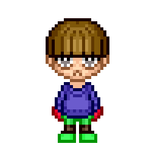

A Code Journal for
Hub Pages
View the Code Journal on GitHub
Repositories and latest Contribution Activity
A Code Journal for
Hub Pages
View the Code Journal on GitHub
Last updated on March 5th, 2020
This section includes information about bot experiments.
#bot #facebook #mixer #youtube #twitch #gaming #detroit #livestream #discordLAST UPDATED: [ Sunday, September 21, 2019 at 9:30 A.M.]
Future work includes optimizing control settings automatically, and building more convincingly human-like chatbots.

The ideal is to go beyond Conversational AI, messaging apps, speech-based assistants and chatbots to automate communication and create personalized customer experiences at scale. The sad truth is bots usually support methods of traditional psychological warfare and are used to:
// package.json
{ ...
"dependencies": {
// API Express Backend
"@mixer/client-node": "^3.3.1",
"carina": "^0.11.2",
"cookie-parser": "~1.4.3",
"cors": "^2.8.5",
"debug": "~2.6.9",
"ejs": "~2.5.7",
"express": "~4.16.0",
"http-errors": "~1.6.2",
"morgan": "~1.9.0",
"ws": "^6.2.1"
...
// Client React Frontend
"react": "^16.8.6",
"react-dom": "^16.8.6",
"react-scripts": "2.1.8"
...
}
...
}
// API Express Backend app.js
const createError = require('http-errors');
const express = require('express');
const tmi = require('tmi.js');// tmi.js module
const path = require('path');
const cookieParser = require('cookie-parser');
const logger = require('morgan');
const Discord = require('discord.js');// discord.js module
const Mixer = require('@mixer/client-node');// mixer module
const ws = require('ws');
const http = require('http');
const fs = require('fs');
const readline = require('readline');
const cors = require('cors');
const {google} = require('googleapis');
const Carina = require('carina').Carina;
const hostname = '127.0.0.1';
const port = 3000;
...
// oauth.js
...
// This is the client ID and client secret that you obtained
// while registering the application
const clientID = ''
const clientSecret = ''
const app = express();
// Declare the redirect route
app.get('/oauth/redirect', (req, res) => {
// The req.query object has the query params that
// were sent to this route. We want the `code` param
const requestToken = req.query.code;
someThing({
// make a POST request
method: 'post',
// to the Github authentication API, with the client ID,
// client secret and request token
url: `https://somewhere.com/login/oauth/access_token
?client_id=
${clientID}&client_secret=
${clientSecret}&code=
${requestToken}`,
// Set the content type header, so that we get the
// response in JSOn
headers: {
accept: 'application/json'
}
}).then((response) => {
// Once we get the response, extract the access token from
// the response body
const accessToken = response.data.access_token
// redirect the user to the welcome page, along with the
// access token
res.redirect(`/welcome.html?access_token=${accessToken}`);
})
})
...
Mixer is where viewers and streamers come together in new ways. See the hottest games in action, share your own gaming adventures, and join in for amazing fun.
When MixPlay is enabled, anything can happen. On Mixer, streamers and viewers are more connected than ever before. Tune in to vote on dialogue and decisions, help or challenge streamers in their games, and even summon mobs in Minecraft. Or use MixPlay to enhance streams with overlays, stats, and other useful information.
On Mixer, when you visit a channel page you can send messages to the channel that all the viewers and the channel owner can read. With FTL this allows a streamer to react in near real-time to chat messages as they come in. Chat also fully supports developers, you can use our Chat APIs to get in on this action and contribute in a ton of meaningful ways to the chat experience.
Please check the methods.md file.
CHAT - https://dev.mixer.com/reference/chatin a console type:
install mixer-bot
Or, inside settings select Install and then search for
this package.
mixer-bot 0.1.1
bot supports different settings to change it, go to Settings > platform and click the cog icon next to the service selector. You'll find the icon picker there.
Here's the obligatory screenshot. With mixer-bot
Twitch is a global community of millions who come together each day to create their own entertainment: unique, live, unpredictable, never-to-be repeated experiences created by the magical interactions of the many. With chat built into every stream, you don’t just watch on Twitch, you’re a part of the show.
Twitch Extensions enable you to create live apps that interact with the stream, as a panel on a channel, or with chat. Create interactive experiences such as mini-games, leaderboards, live gear information and more.
A panel extension appears in the panel area below the video player. Panel Extensions stay active even when the channel is not live.
A video-overlay extension renders on top of the video player as a transparent overlay. Overlay Extensions are viewable only when the channel is live.
A video-component extension renders on top of both the video player and any video-overlay extensions. Component Extensions take up only part of the screen and can be hidden by viewers. Component Extensions are viewable only when the channel is live.
Twitch offers an Internet Relay Chat (IRC) interface for chat functionality. Chatbots allow you to programmatically interact with a Twitch chat feed using IRC standards; the bot connects to the Twitch IRC network as a client to perform these actions.
twitch-bot 0.1.1NOTE:
Broadcasters can activate up to 6 extensions at a time
3 panel, 1 video overlay (full screen), and 2 video component
(smaller).
Integrate YouTube videos and functionality into your website or application.
The YouTube Live Streaming API lets you create, update, and manage live events on YouTube. Using the API, you can schedule events (broadcasts) and associate them with video streams, which represent the actual broadcast content.
The Live Streaming API is actually comprised of components of the YouTube Data API and the YouTube Content ID API. The Data API enables YouTube users to manage their YouTube accounts, while the YouTube Content ID API enables interactions with YouTube's rights management system. However, all of the resources that make up the Live Streaming API are used only to create and manage live events.
Youtube-bot 0.2.1All-in-one voice and text chat for gamers that's free, secure, and works on both your desktop and phone.
discord-bot 0.2.1The Live Video API enables video encoders, cameras, web, and desktop applications to stream live video directly to Facebook user profiles, pages, and groups. As long as your app can produce a live RTMPS stream, you can stream to Facebook using the Live Video API.
facebook-bot 0.2.1